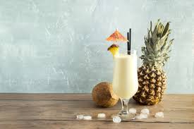

Caipirinha

Description
Refreshing Brazilian pineapple caipirinha recipe made with pineapple infused cachaca, limes, sugar, crushed pineapple and ice.
Ingridients
- 1 bottle of cachaca
- 1 whole pineapple peeled and sliced
- Crushed iced
Method
- To make the pineapple infused cachaca place the pineapple slices in a large container, pour the cachaca over the pineapple slices, close tightly and let it rest in a dark cool place for a few days – but no longer than a week. Remove the fruit and strain the alcohol when it’s ready.
- Use a muddler to crush and mix the limes and sugar in a cocktail shaker.
- Add the cachaca, crushed pineapple, stir well and serve immediately over crushed ice.